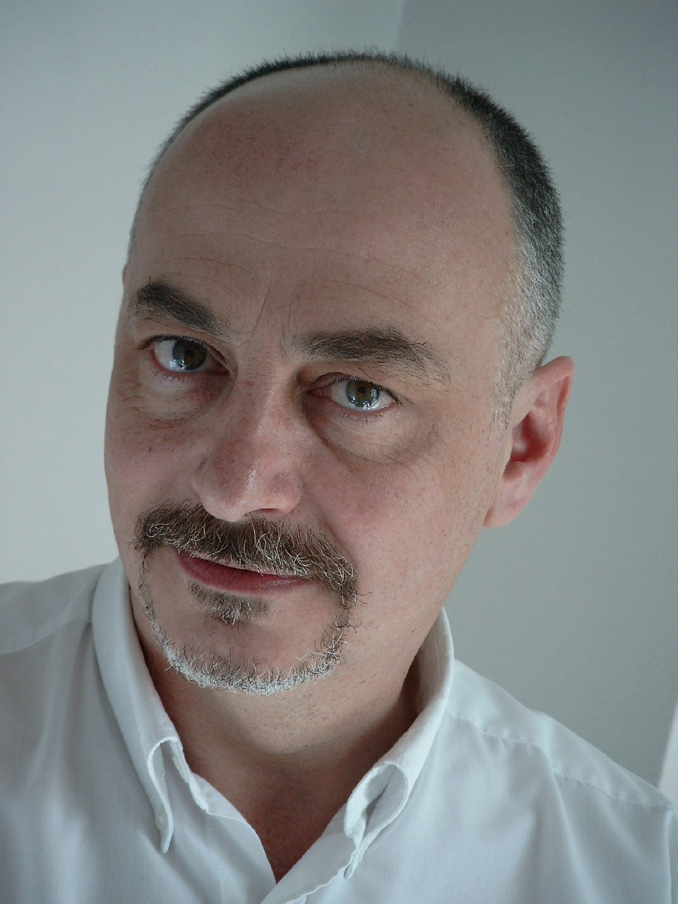

Présentation
Qui suis-je ?
Psychologue clinicien depuis 1978, je suis titulaire d’une maîtrise et d’un DESS de psychologie clinique et psychopathologique de l’université Lyon II ; je me suis formé à la psychanalyse, puis à l’approche systémique et à la thérapie familiale, à la thérapie brève orientée solutions, à l’hypnose éricksonienne, à l’EMDR, …
Comment je travaille…
Adepte de l’empowerment, je considère que le client a le pouvoir et doit le conserver. Nous construisons ensemble la séance, sur la base de ce que vous désirez travailler, sur vos objectifs et à votre rythme. En général peu de séances sont nécessaires et j’aime travailler dans une ambiance de convivialité et de détente.
